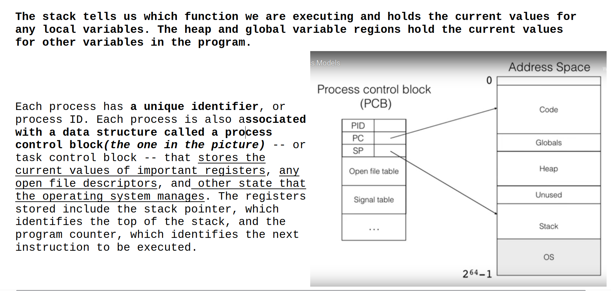
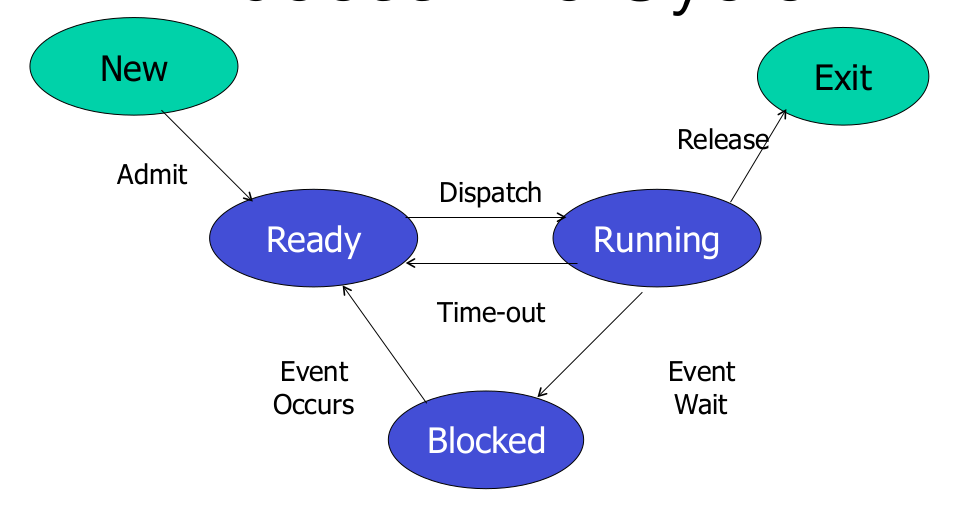
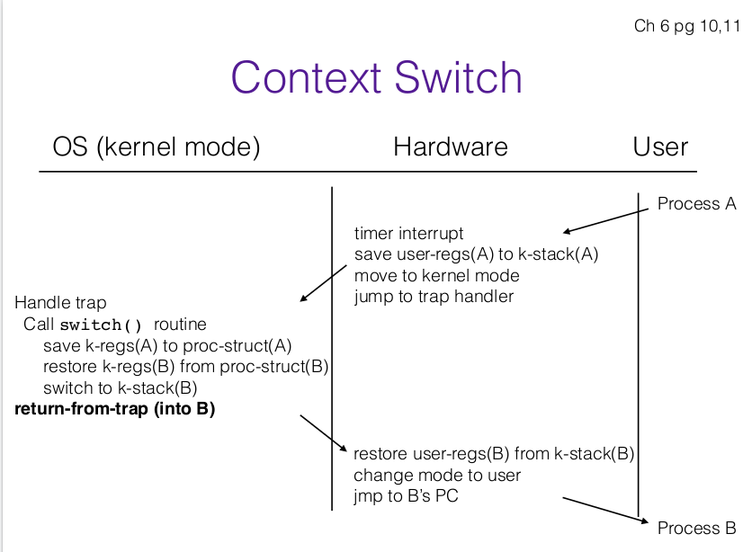

Processes
Process Control Block(PCB)

Contains information related to a process. The information must be saved and updated, as process moves from one state to another(new, read...etc)
-
Process state: (new, ready, running, waiting, terminated)
-
Program Counter: address of the next instruction to execute in the process
-
Registers: the specific registers that are used + their values
-
PID: ID of a particular process
-
OS resources: List of open files, network connections, signals, etc
-
Location of PCB: PCB is kept in memory area that is protected from normal user access. Some OS's place it at beginning of the kernel stack.
Process Life Cycle

- Ready(its waiting for OS to pick it up and move it to running)
When creating a process, before moving it to ready do the following:
-
Create new Process:
-
CB, user address space structure
-
Allocate memory
-
-
Load the program executable: initialize the start state for process(initialize all necessary variables, create necesssary network connections, db connections, open files, etc)
-
Change state to ready
-
Running(moves to Blocked if waits for some event(I/O, sleep, etc) or Ready if the OS interrupts it)
-
Blocked (moves to ready when even occurs)
Managing states
-
OS maintains a queue for each state(ready, running, blocked).
-
As a process changes its state, its PCB(a pointer to it) is unlinked from one queue and moved to another)
-
OS uses a context switch: a switch thechange CPU to another process by:
-
Saving the state of the old process
-
Load saved state for new process
Context Switch
When does it happen?
-
Process calls
yield()system call voluntarily (occurs rarely) -
Process is blocked when it makes a certain system call
-
Timer interrupt handler decides to switch processes

-
Notice in hardware it saves the user registers of process A to k-stack of A
-
In OS mode: OS first saves the k-regs(think of k-regs as the current registers) to process struct A, and recovers k-regs from proc-struct(B).
Question: this entire diagram
Process Creation(In Unix)
-
In some systems, children of process inherit permissions of parent process, and other resources
-
After creating a child process (entire new PCB), parent may either wait for it to finish its task or continue in parallel. This depends on the OS and on your hardware. If only 1 CPU is available, OS can only run one of them at the same time. If more are available, OS can choose to run both of them at the same time. OS decides if parent or child goes first
fork():
-
Creates and initializes new PCB
-
Creates new address space
-
Initializes address space with copy(note that its a copy, the child does not have a direct relation to the parent. )of entire contents of address space of the parent, i.e it has access to a copy of same data that parent proces has access to
-
Initialize kernel resources to point to same resources as used by parent(db connections, open files, etc)
-
Places PCB on ready queue.
-
Returns child PID to parent, returns 0 to the child(use return pid to differentiate if you're in the parent or the child.)
Process Destruction
exit()
-
process voluntarily releases all resources
-
exit()doesn't free all of the data. -
Must stop process to free everything(i.e needs to context switch to another process)
-
A process is a zombie, until its parent collects information it, by calling wait() and catching the
SIGCHILDsignal. Once that happens wait() returns, process can read information of child and then zombie is completely removed from the memory.
if a parent process isn’t programmed properly and never calls wait(),its zombie children will stick around in memory until they’re cleaned up.